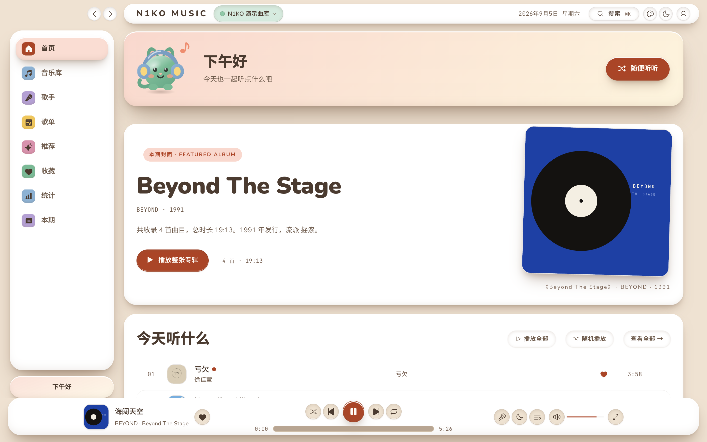
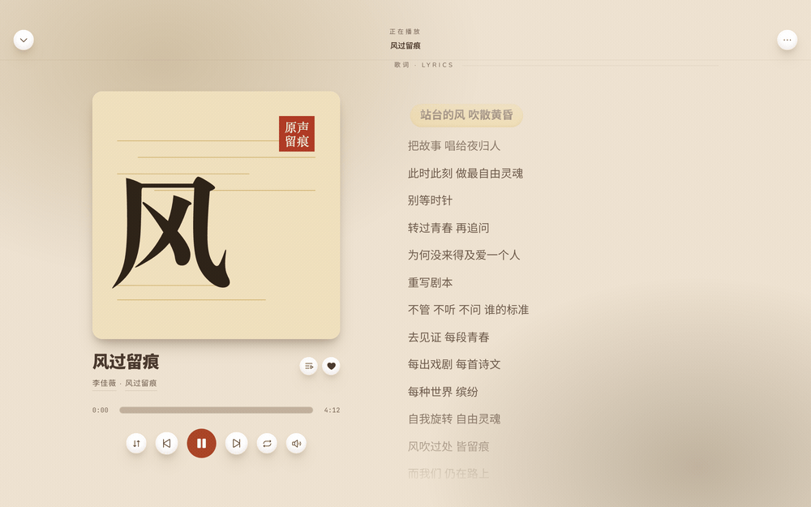

播放
D.01- 真正的全库随机——从服务器抽样，队列显示真实顺序
- 无损直通 + 三档码率，Wi-Fi 与蜂窝分别设置自动切换
- ReplayGain 用服务器算好的增益，母带不再忽大忽小
- 队列不会停：相似曲目自动接，任何种子都能开电台
- 继续听与跨设备续播，断点取自服务器书签
VOL.3 · NO.36 · 本期封面
连上 Navidrome / Subsonic / Jellyfin / Emby，把自己的曲库读成一本排好版的刊物——报头、刊号、封面故事、书眉、版记，一样不少。

两种来源并排而坐，不是二选一。搜索按来源分组，队列里混着放。
可选能力是探测出来的，不是假设的——服务器没实现哪一项，那个入口就整个不出现。流媒体只放你账号有权听的内容，VIP 曲目会标明原因，不做任何「解析」。
音源是兼容 MusicFree 协议的插件，不能碰页面，不能自己联网。
一切请求经宿主代理，manifest 列出的域名才放行，重定向逐跳复查。
与服务器密码同一把 AES-GCM 设备密钥，只存在本机，不经过第三方。
三张皮肤共用同一套组件，一键切换，各自有浅色与深色。

四个常设栏目，像一本杂志的版面分工。
TELEMETRY: NONE.
没有埋点，没有崩溃上报——也没有可以发过去的服务器。
完全免费，完全开源。挑你的平台，几秒钟开始。
macOS 首次打开若提示「无法验证开发者」，到「系统设置 → 隐私与安全性」里允许即可。不想装应用？用 Docker 跑 Web 版，一条命令。